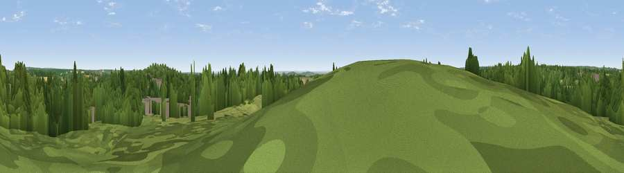

Viewpoint near Lane End
#40741 in England · top 53% of its area beats it · near Lane End · path 207 mWhere it is
The exact computed spot (SU 80325 91775). Click the marker for map links.
Public access: the nearest public right of way is about 207 m away — the final stretch may cross private land. Computed from Natural England's CRoW access layer and OpenStreetMap rights of way — not the legal definitive map. Always verify locally.
The view, rendered

A 360° render of this exact spot computed from the terrain model, tree cover and land cover — summer colours, afternoon light, calibrated against photographs of famous viewpoints. Real trees, hedges and buildings will differ in detail.
The panorama
Grey silhouette: terrain skyline in each direction (720 bearings, Earth curvature and refraction included). Dashed green: skyline with trees (+15 m) and buildings (+8 m) as obstacles. Blue strip: how far the ground is visible on each bearing.
Where the view opens
Wedge length = distance to the farthest visible ground on that bearing (vegetation-aware). Rings at 10, 25 and 50 km.
What fills the view
49% woodland · 37% grassland · 7% cropland · 6% built-up
Angular shares of the visible panorama (visual magnitude), not map area. Landscape diversity 0.47 (0–1 Shannon).
Key numbers
More beautiful places nearby
The staircase of upgrades: each row has a higher view potential than everything closer. Driving times are estimates from straight-line distance, calibrated against real road routing — check an actual route before setting out.
| Place | Direction | Drive | Score |
|---|---|---|---|
| Viewpoint near Lane End | E · 1 km | ~4 min | 31.8 |
| Viewpoint near Cadmore End | WNW · 2 km | ~5 min | 33.0 |
| Viewpoint near Hambleden | SSW · 4 km | ~9 min | 34.6 |
| Viewpoint near Turville | WSW · 4 km | ~10 min | 35.7 |
| Viewpoint near Bledlow Ridge | N · 6 km | ~13 min | 37.0 |
| Viewpoint near Fawley | WSW · 7 km | ~15 min | 48.8 |
| Viewpoint near Kingston Blount | NW · 9 km | ~17 min | 67.4 |
| Viewpoint near Kingston Blount | NNW · 9 km | ~17 min | 70.1 |
51.61908, -0.84118 · source: screening · position refined by local search. Computed location — check access rights before visiting.